When writing my own code for convolution, I found it more intuitive to implement the it using two loops rather than four. I started off by
convolving a small 9 by 9 random image, which made padding more intuitive and aligned more with what we covered in lecture. But, when dealing
with a rectangular image, I had to keep track of two variables for padding: one for height and one for width, instead of just working with one
for a square image. Adjusting array indexing in the "result" variable because of padding was one of the more frustrating aspects of this part.
### Implementation of convolution in 2 loops!
def convolution(input_img, kernel):
img = input_img.copy()
output = np.zeros_like(img)
if kernel.ndim == 2:
kernel = np.flip(kernel, axis=(0,1))
else:
kernel = np.flip(kernel)
kernel_height, kernel_width = kernel.shape # Padding for non-square kernel
k_height, k_width = (kernel_height - 1)//2, (kernel_width - 1)//2
img = np.pad(img, ((k_height, k_height), (k_width, k_width)), 'constant', constant_values=0)
for i in range(k_height, img.shape[0] - k_height):
for j in range(k_width, img.shape[1] - k_width):
result = kernel * img[i-k_height:i+k_height+1, j-k_width:j+k_width+1]
output[i-k_height,j-k_width] = np.sum(result)
return output
Then to do convolution of the box filter and Dx, Dy operators with the image:
dx = np.array([[1.0, 0.0, -1.0]])
dy = np.array([[1.0], [0.0], [-1.0]]) # dy needs to be a column vector
box_filter = 1/9 * np.ones((3,3))
box_convo = convolution(img, box_filter)
dx_convo = convolution(img, dx)
dy_convo = convolution(img, dy)
When comparing my convolution against scipy's version, especially on a large image, I noticed that my implementation
took 2 minutes to run on a (5712 , 4272) array, while scipy only took around a second. For my implementation of a convolution, I
used basic padding and implemented scipy's equivalent of the "same" mode. I did not implement any of the boundry options we talked about
in class (wrap, reflection, fill, etc) that scipy offers.
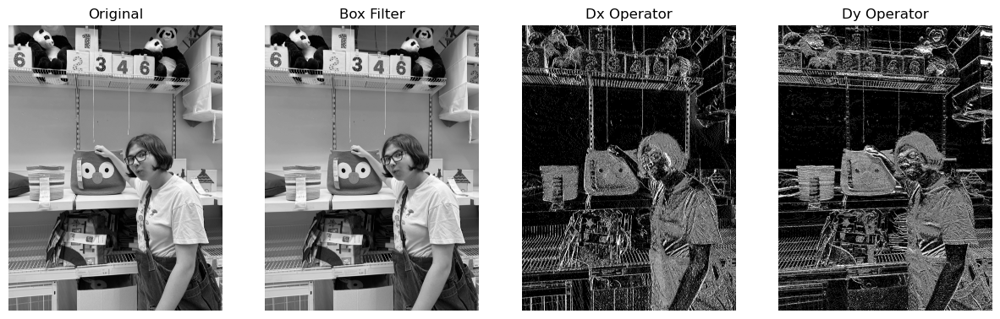
Part 1.2: Finite Difference Operator
To take the gradient of an image, I convolved the image with the following vector Dx = [-1 0 1], which is the discrete equivalent of
the limit definition of a derivative. However, convolving with the vector Dx will give the image gradients in the x direction. For the
y direction, I convolved image with the same vector transposed: Dy. Then, I calculated the gradient magnitude by taking the Euclidean
norm of the resulting Dx and Dy images.
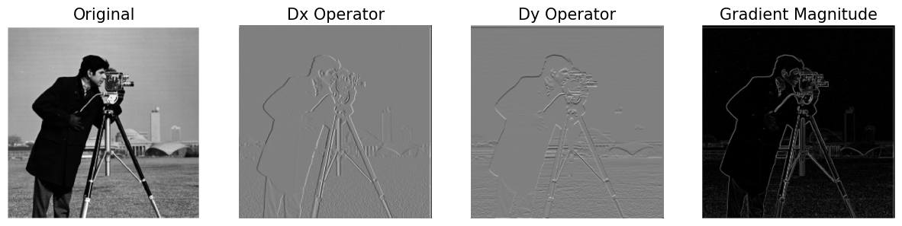
To make the edges more explicit, I thresholded the gradient magnitude image to retain edges above a certain threshold and exclude any
edges with values below that threshold. A threshold closer to 0 allows for more edges to be detected (which
also increases the amount of noise). I chose to keep some edges from the image background by setting the threshold to 0.25.
A threshold of 0.35 shows the tradeoff between edge strength and noise/number of edges captured.
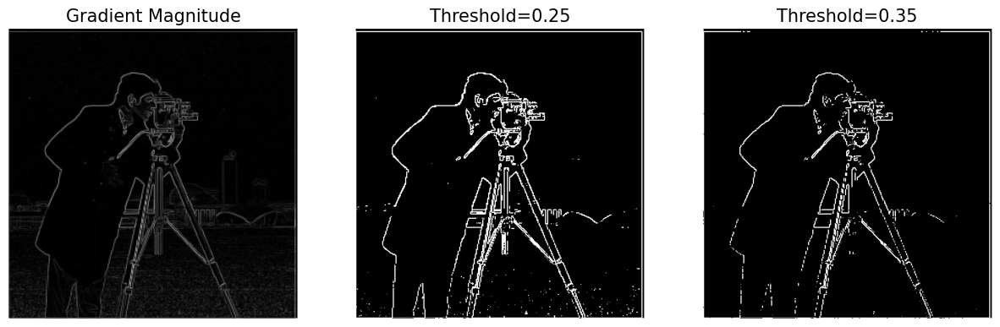
Part 1.3: Derivative of Gaussian (DoG) Filter
To create a Gaussian filter with standard deviation σ and kernel size 2σ + 1, I used the cv2.getGaussianKernel function. My derivatives of the Guassian
filter (with σ=3 for the cameraman image) are as follows:
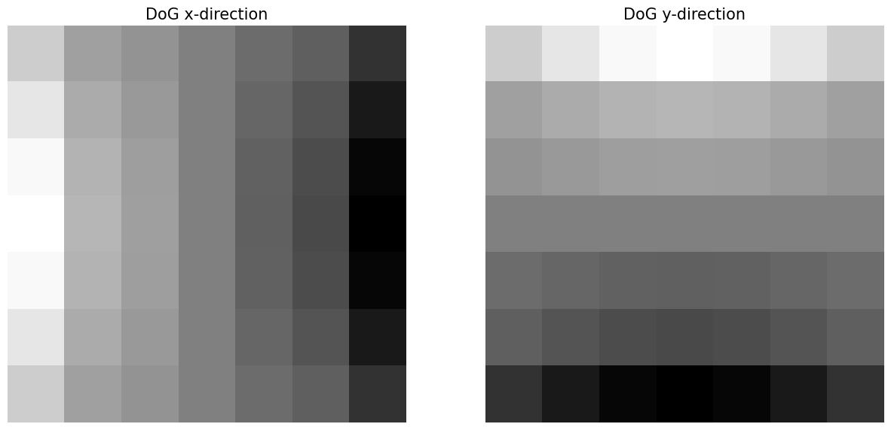
As expected, when I blurred the image with the Gaussian then took the derivative, the result was the same as when I took
the derivative of the Gaussian filter (DoG) then blurred the image with the DoG. This works because convolution is commutative (hooray to math)!
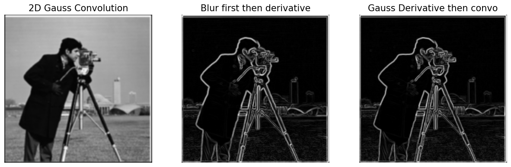
When applying the DoG to the image, I noticed the edges can be much more clearly detected in the magnitude image
than if we were to take only the derivative:
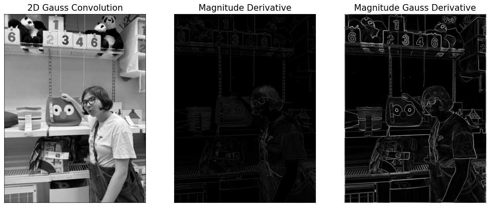
Bells & Whistles
I referenced this image gradient article and used the following formula to calculate gradient
orientations in the cameraman image: arctan[Dy/Dx]. Then, I used one of the cyclic color maps in matplotlib (hsv)
to visualize the results. Red indicates the edges caught by the Dx operator (look at cameraman outline) and green indicates the most prominent edges caught by the Dy operator (look at background hills).
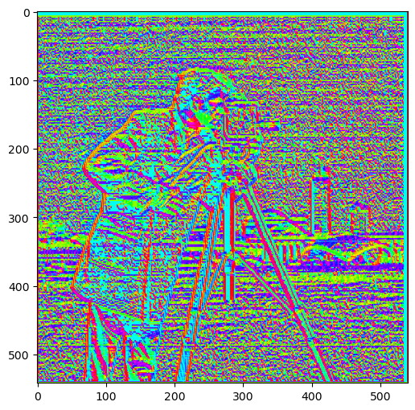
Part 2: Fun with Frequencies
Part 2.1: Image "Sharpening"
To implement image sharpening, I convolved the image with a Gaussian blur kernel to obtain low frequency information. Then, I subtracted the low frequency information from the original image
to obtain the high frequencies, which multiplied by a scalar factor alpha and added back to the original image to get the sharpened result.
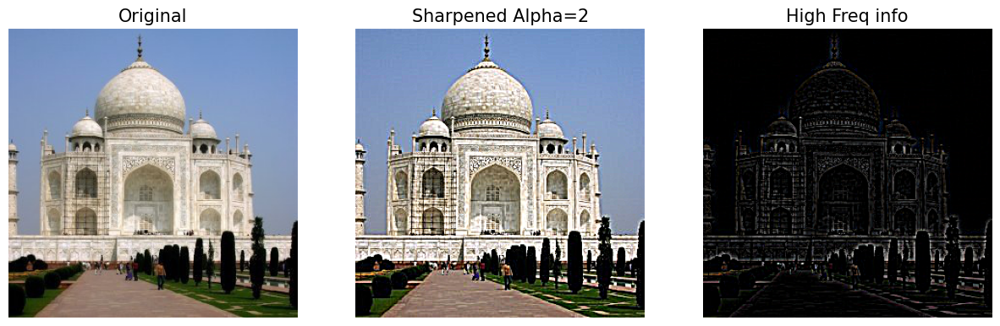
When increasing the alpha value, the image becomes more "grainy" since there is more and more high frequency information being introduced back into the original image. This can be most clearly seen
on the rosemary branch, the spices on the chicken, and the aluminum foil.
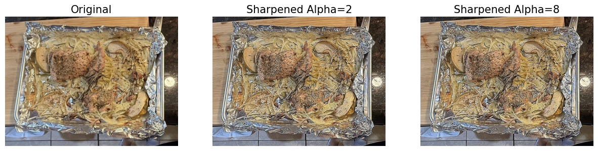
Now, what happens when we sharpen an already sharp image? Below, I sharpened the bagel image with an alpha=10 and sharpened it again with an alpha of 5.
Unsurprisingly, the resulting image was pretty much the same as the image when it was first sharpened.
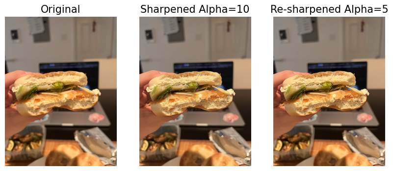
Part 2.2: Hybrid Images
To create the hybrid images seen below, I first aligned the images to make them look more appealing when overlapped. I then convolved one of the images with a Gaussian blur kernel (low pass filter)
and convolved the second image with (an impulse - Gaussian kernel), which acts as a high pass filter. After adding the resulting low and high pass images together, I obtained the hybrid images shown below.
Let's take a more detailed look at the hybrid car image! Below, you can see the alignment of the Rambler and the Hartford as well as the two automobiles being low passed
and high passed, respectively. For the automobile hybrid image especially, the devil was in the details: there were too many of them in the Hartford! When I tried to
decrease the amount of high frequency information, the Hartford wasn't visible enough but the Rambler was always clearly seen, so I decided to use a high σ value
for the Rambler (σ = 50) to decrease the low frequency information and used a σ of 40 for the Hartford to keep the color of the Hartford visible.
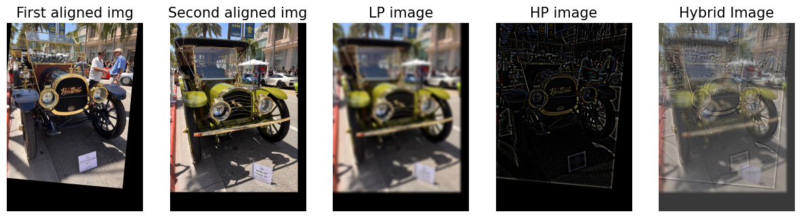
The plots below show the hybrid automobile image in Fourier space. As you can see below, the hybrid retains a lot of the high frequency information from
the Hartford (look at regions in the graph further from the origin), meanwhile the low frequency information resembles that of the Rambler's FFT graph.
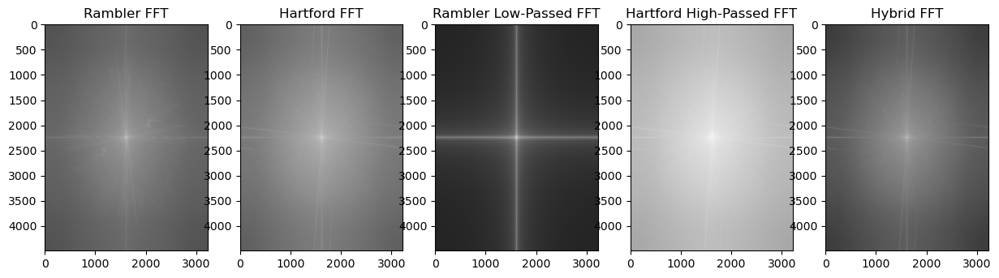
Bells & Whistles
To make things a bit more interesting, I tried to play around with the colors in the hybrid automobile image. I set either the Rambler or the Hartford image to grayscale.
Making the high frequency component gray doesn't make too much of a difference to the hybrid image. However, removing color from the low frequency component does
reduce the amount of color in the hybrid significantly. In the hybrid automobile example, it actually makes the Hartford more easily visible (when working with downsampled images as seen below)!
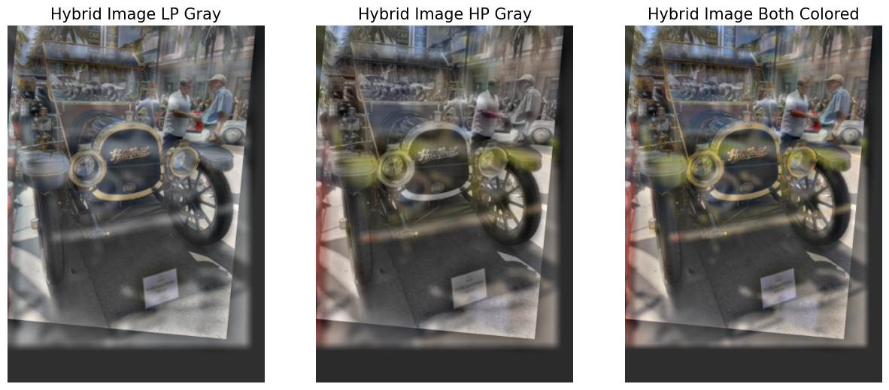
With the full scale images, though, making the Rambler gray makes the entire image pretty much gray. But, I think that for carefully chosen images, making either the low pass or high pass
image grayscale can be quite interesting!
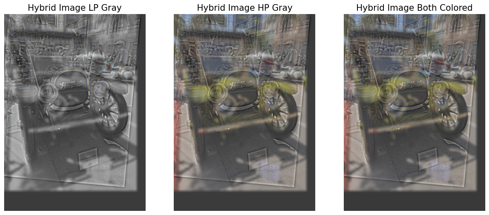
Multi-resolution Blending and the Oraple journey
Part 2.3: Gaussian and Laplacian Stacks
A Gaussian stack creates a stack of blurred images that, unlike a pyramid, are not downsampled, meaning each image in the stack is the same size.
I implemented a Gaussian stack by creating a for loop (number of loops = maximum depth of the stack), increasing the Gaussian filter size at each
level of the stack and convolving the image with the Gaussian kernel. This creates a stack where each consecutive image becomes more and more blurred
(last image contains lowest frequency information).
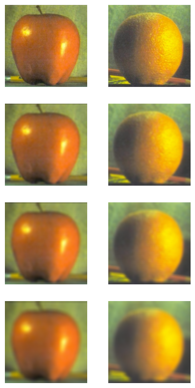
In a Laplacian stack, we want to create a stack of sub-band frequencies such that the first image in the stack has the highest frequency band information and the second to last image has
the lowest frequency band information. To implement this, I took the Gaussian stack and subtracted neighboring images. The last image in the Laplacian stack cannot be involved in the subtraction
in order to preserve the lowest frequency information in the image. This allows us to collapse the Laplacian pyramid and obtain the original image by summing together all images in the stack
(this will be useful for splining in the next part).
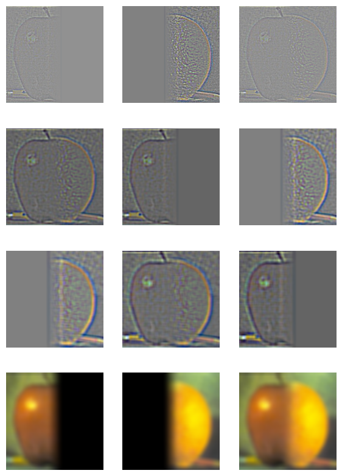
Part 2.4: Multiresolution Blending (a.k.a. the oraple!)
Finally, to make a splined image, I created an image mask to select which parts of each image I wanted to keep. I then created three Laplacian stacks: one for the mask
and one for each of the two images. At each of the stack levels, I multiplied the Laplacian image by the mask and add it to the other Laplacian image multiplied by (1-mask).
This operation created a single resulting image stack, whose images I summed together to produce the final hybrid image.
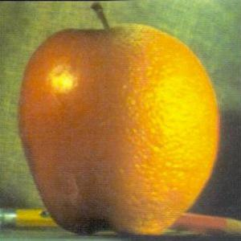
Oraple
Apple
Orange
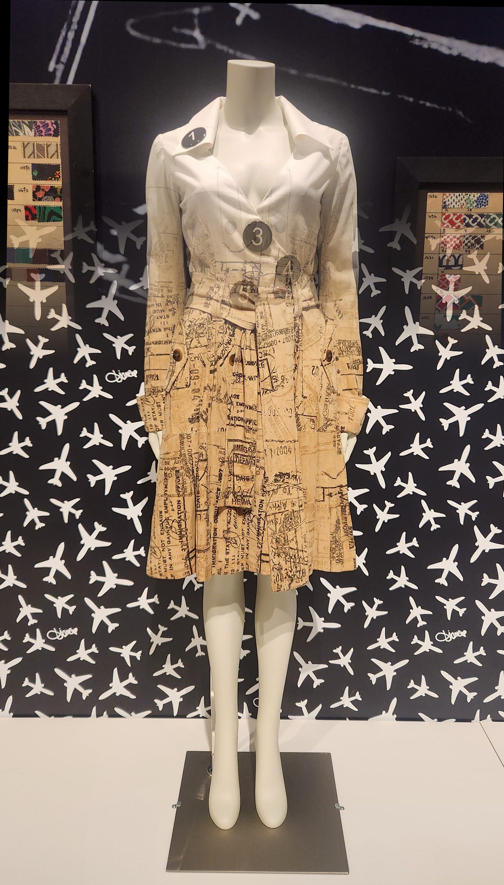
Dress Spline
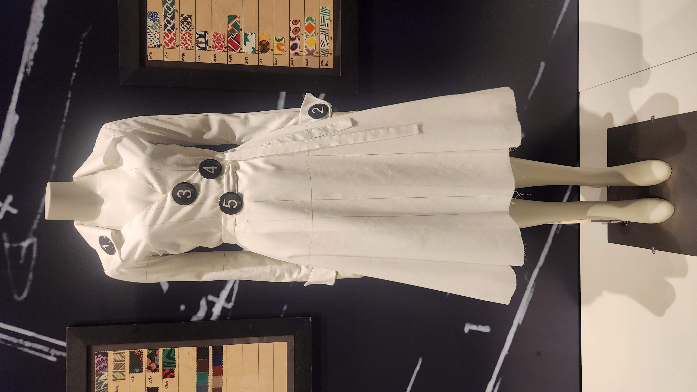
Demo Dress
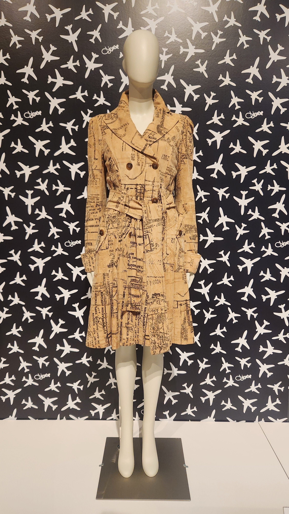
Travel Dress
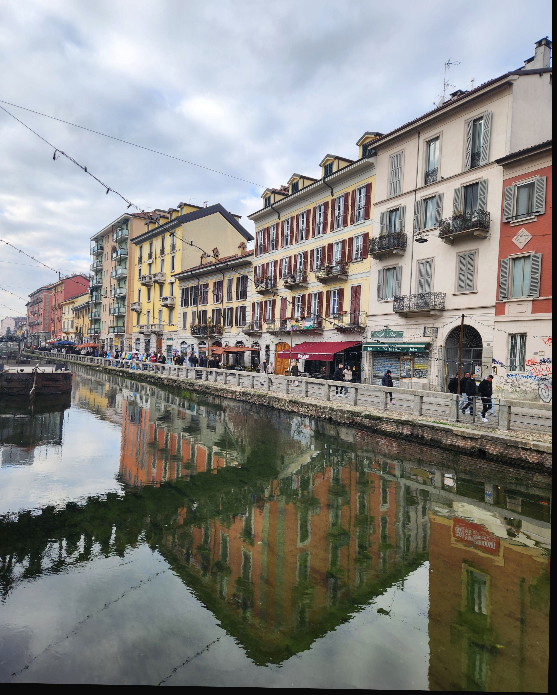
Canal Spline
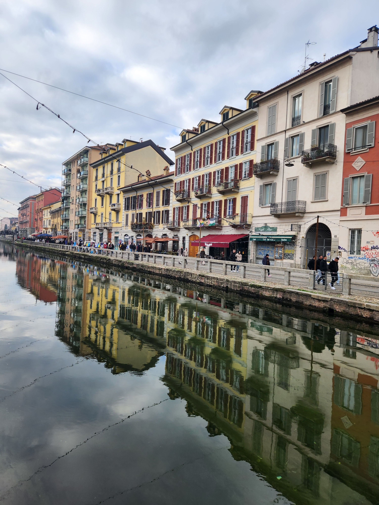
Canal
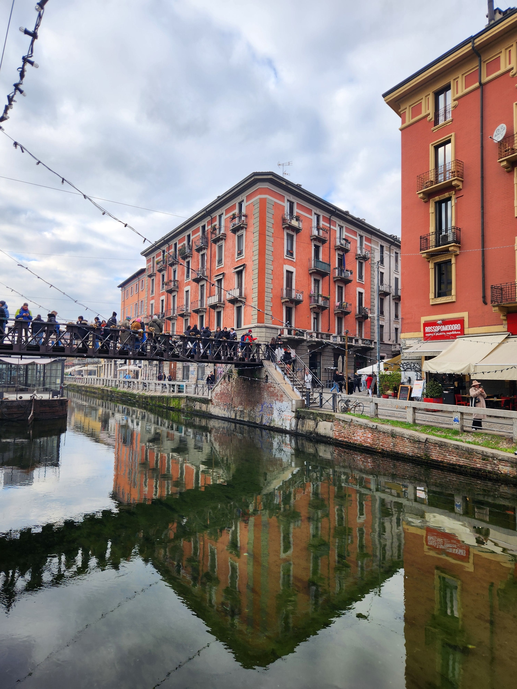
Canal with Bridge
Bells & Whistles
Originally, my oraple wasn't very smooth. So, after being inspired by an Ed post
I made my transition mask more of a smooth gradient rather than a binary shift from 0 to 1. This resulted in an overall smoother version of the oraple. I used this smooth
transition for all of my splines above.
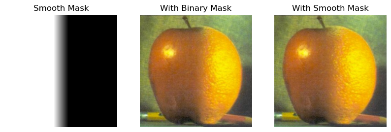
I experimented with making either one of the two blended images grayscale. I especially like the dress example!